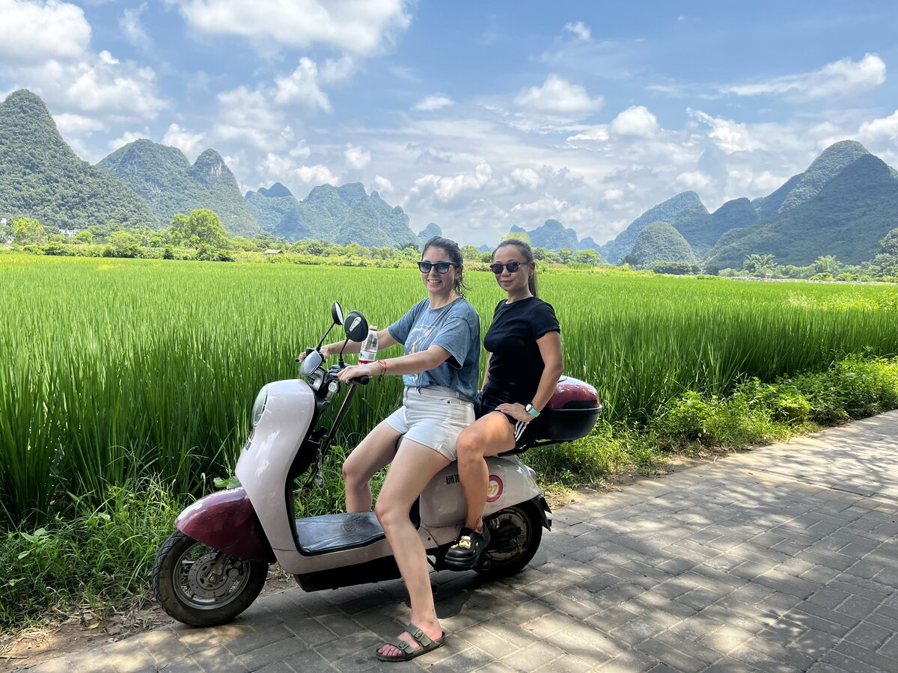
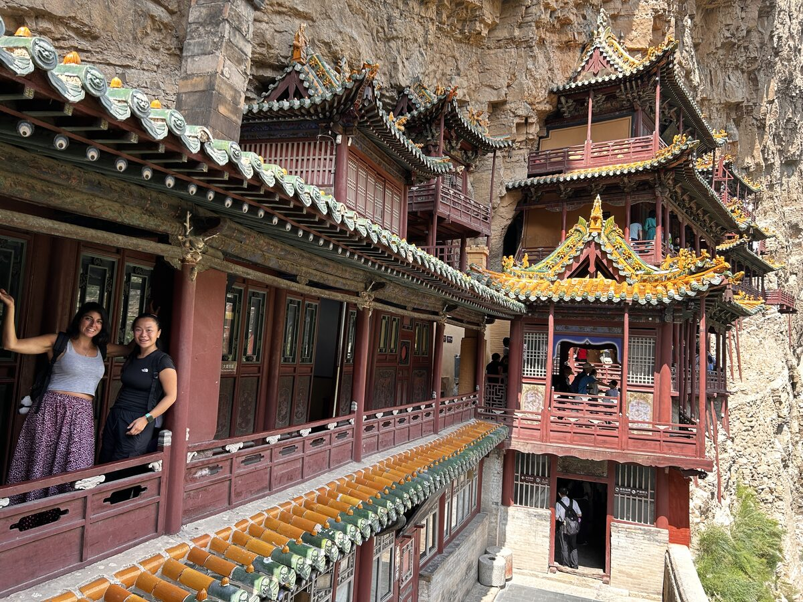

Las gafas con las que decidimos mirar el mundo
El comienzo de una serie sobre China
Hay viajes que nunca se olvidan.
Viajes que cambian para siempre la forma de entender la existencia. Viajes que te transforman desde un lugar tan profundo que sabes que necesitarás meses, quizá años, para comprender realmente todo lo que te han regalado.
China está siendo uno de esos viajes.
Llegué con ilusión, con curiosidad y con una mochila llena de expectativas que, ahora me doy cuenta, ni siquiera eran mías.
Qué fácil es juzgar en la distancia
Durante años había escuchado que China era un país sucio, desordenado, ruidoso. Que la gente escupía por la calle. Que eran maleducados. Que aquello era un caos.
Lo más curioso de todo es que muchas de las personas que me habían contado esas historias jamás habían estado aquí.
Y ahí apareció la primera gran enseñanza del viaje.
Qué fácil es juzgar en la distancia.
Qué sencillo resulta construir una opinión sobre un país entero sin haber pisado nunca su tierra, sin haber mirado a los ojos a quienes viven en ella, sin haber compartido una comida, una conversación o una simple taza de té.
Quizá la ignorancia no sea el verdadero problema.
Quizá lo sea la soberbia con la que a veces la vestimos.
Porque cuando creemos conocer un lugar sin haberlo vivido, dejamos de tener curiosidad. Y cuando desaparece la curiosidad, también desaparece la posibilidad de sorprendernos.
Y China no deja de sorprenderme.
Humanidad
He encontrado un país inmenso, complejo y lleno de contrastes. Un país que a veces parece vivir en el futuro y otras conserva tradiciones milenarias con una naturalidad que emociona.
Pero, por encima de todo, he encontrado humanidad.
Me he cruzado con cientos de miles de personas desde que llegué.
Algunas solo durante unos segundos.
Otras han compartido conmigo un trayecto en tren, una comida o una conversación improvisada utilizando un traductor en el teléfono.
He visto a dueñas de pequeños hoteles acompañarnos varios minutos cargando nuestras maletas para asegurarse de que encontrábamos el camino correcto.
A camareros rellenando una y otra vez nuestras tazas de té sin necesidad de pedirlo.
A abuelos paseando de la mano con sus nietos.
A jóvenes escalando montañas.
A taxistas cantando mientras conducían.
A personas esforzándose por entendernos aunque no compartiéramos una sola palabra.


Y, sobre todo, he visto miradas.
Miradas que hablan exactamente el mismo idioma que las nuestras.
Porque, cuando consigues apartar el ruido de los prejuicios, descubres algo muy sencillo.
Un ser humano sigue siendo un ser humano en cualquier lugar del mundo.
Todos soñamos.
Todos amamos.
Todos sentimos miedo.
Todos queremos cuidar de quienes queremos.
Todos buscamos, de una forma u otra, una vida un poco mejor.
Quizá cambien las costumbres.
La comida.
El idioma.
La forma de expresar el cariño.
Pero la esencia permanece.
Las gafas prestadas
Y entonces entendí que viajar no consiste únicamente en descubrir lugares nuevos.
Viajar también es cuestionar las historias que dabas por ciertas.
Es darte cuenta de que muchas de las gafas con las que miras el mundo nunca las elegiste tú.
Te las prestaron.
La televisión.
Las noticias.
Los comentarios de otras personas.
Las conversaciones de sobremesa.
Y un día llegas a un país que rompe todas esas ideas en mil pedazos.
No porque sea perfecto.
Ningún país lo es.
Sino porque es infinitamente más complejo, más humano y más hermoso de lo que cabía dentro de un prejuicio.
Desde entonces intento hacer un pequeño ejercicio cada vez que viajo.
Preguntarme de quién son realmente las gafas con las que estoy mirando.
Y, si descubro que no son mías, tener el valor de quitármelas.
Porque quizá esa sea una de las mayores enseñanzas que puede regalarnos un viaje.
No cambiar el mundo.
Sino cambiar la forma en la que decidimos mirarlo.
Esto es solo el primer capítulo.
China tiene mucho más que enseñarme.